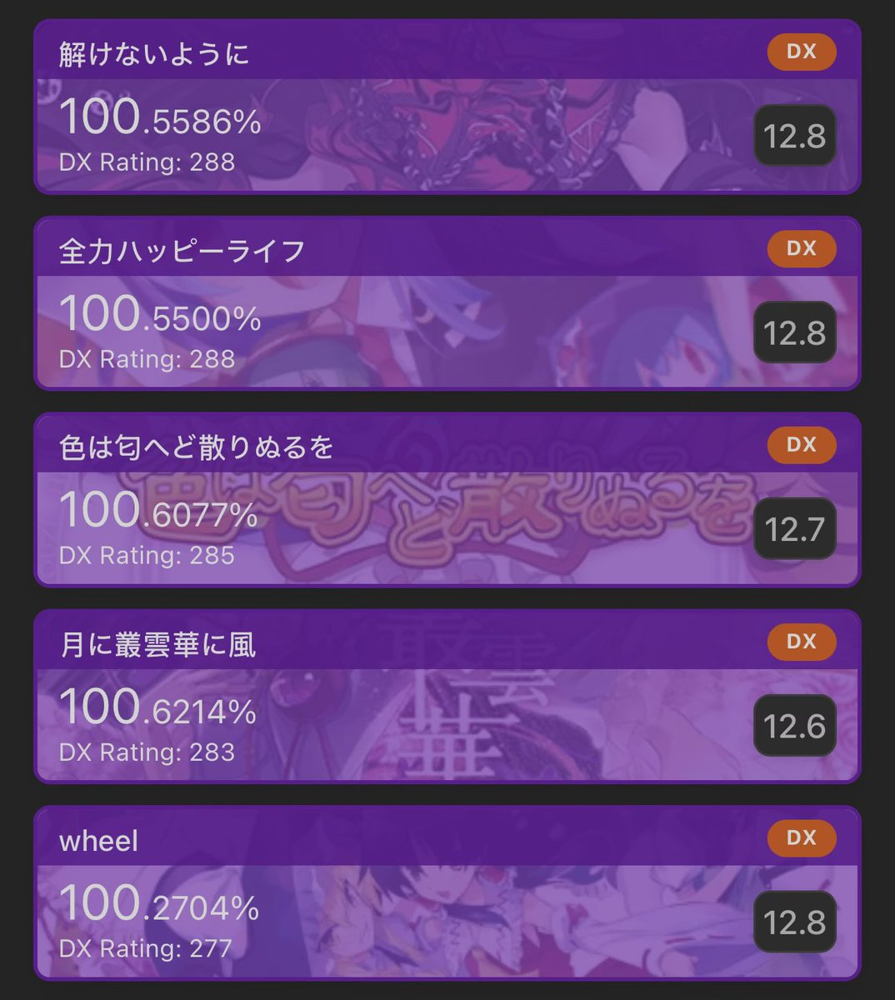
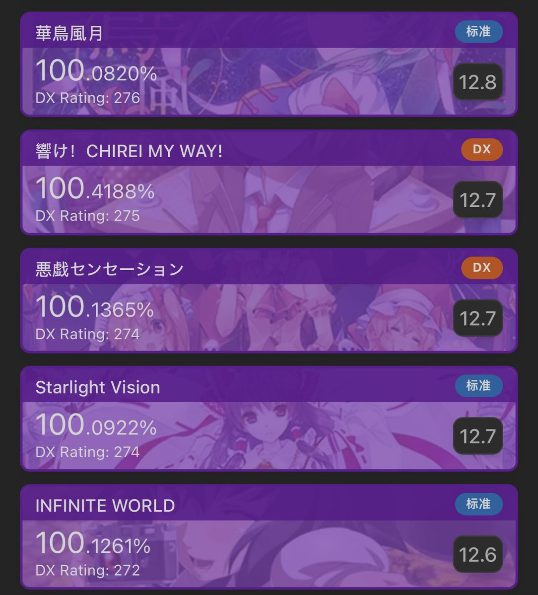

@preache46170848 wheel：好精美的星星曲，一笔画要注意比较大的出张，位移定位不好可能续不上星星头，然后倒数十秒左右那个尾杀好容易傻掉落了quq
Starlight Vision：表面上是善良的东方小歌，看作者会发现是大名鼎鼎的矢鴇つかさ，紫谱风格也是红香水红火娃的味道，特别喜欢w

Starlight Vision：表面上是善良的东方小歌，看作者会发现是大名鼎鼎的矢鴇つかさ，紫谱风格也是红香水红火娃的味道，特别喜欢w


@preache46170848 解けないように：有一次突然心流了才鸟加的（）
全力Happy Life：主要需要注意底测几个撞尾星星，以及18号键双押下滑几组星星互相不蹭，剩下的就是底力了
色散：不太难，比12.5的标谱简单多了，和星星轨迹反着来的touch有点意思，虽然初见会吓人x
月に叢雲華に風：幻想万华镜诸位里很善良很不地雷的了 https://t.co/zCAssjDWgp
全力Happy Life：主要需要注意底测几个撞尾星星，以及18号键双押下滑几组星星互相不蹭，剩下的就是底力了
色散：不太难，比12.5的标谱简单多了，和星星轨迹反着来的touch有点意思，虽然初见会吓人x
月に叢雲華に風：幻想万华镜诸位里很善良很不地雷的了 https://t.co/zCAssjDWgp